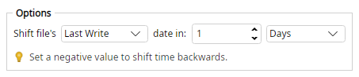

Magic File Renamer Help
Time Shifter

Filter options (screenshot optional — capture to images/TimeShifter.png).
Shifts creation, last write, or last access time by an integer amount. Negative amounts move backward; positive amounts move forward.
Options
- Timestamp field — Creation, last write, or last access.
- Amount — Integer shift (negative = earlier).
- Unit — Seconds, minutes, hours, days, months, or years.
Examples
(last write Monday 10:00, +1 day) >>> (last write Tuesday 10:00)
(creation, −2 hours) >>> (creation two hours earlier)